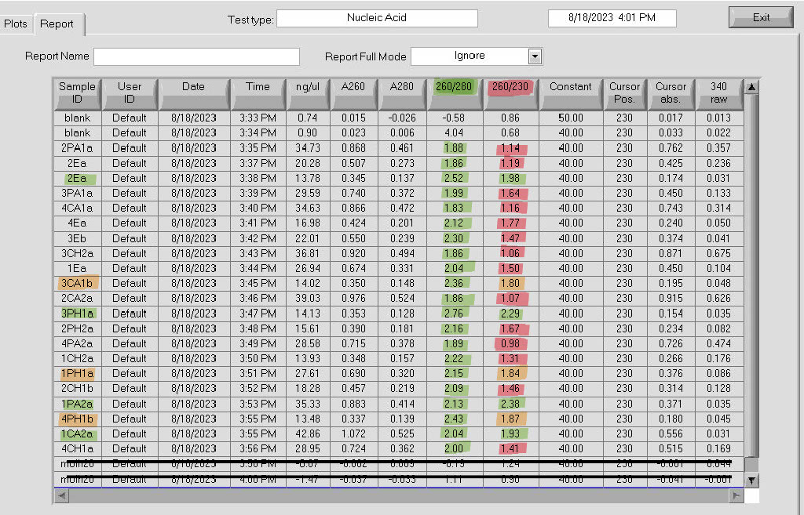

library(data.table)
library(dplyr)
library(formattable)
library(tidyverse)So your samples failed library prep … 😰
After shipping 20 samples to the University of Texas at Austin GSAF for TagSeq on June 7th 2023, I got a message back from them on June 28th 2023:
“Your samples failed in library prep. All 20 of them, the other samples on the 96 well plate as well as our positive control all worked great. We seen this before and it is almost always an indication that there are some type of inhibitors in your samples and it impacted the prep. Based on the quality of the RNA there is nothing more we can do for them, they will not work in the prep until they have been purified, I am not sure how they were cleaned up after the extraction but it needs to be more rigorous and be certain there are no contaminants in the RNA.”
After initial panic and frustration 😨😭… I started researching reverse transcriptase1 inhibitors and reaching out to the Roberts and Putnam Labs to ask for advice (recorded in this Roberts Lab github issue).
1 Reverse transcriptase is an enzyme that transcribes single-stranded RNA into complementary DNA (cDNA) during library prep for RNA sequencing. It was discovered in the 1970’s by David Baltimore and Howard Temin when studying retroviruses (checkout this YouTube video for a brief history on reverse transcriptase, and this YouTube video for a brief explanation of how it is used to turn mRNA to cDNA).
So what did I find, and what does this mean for my samples?
The RNA quantity, measured by Qubit Fluorometer, is good. And the RNA quality, measured by UT GSAF Bioanalyzer, is also good. The issue is that there is something else in the sample that is preventing the reverse transcriptase from generating the cDNA.
Nanodrop purity targets2:
2 Check out Assessing RNA quantity and purity with Nanodrop by TopTipBio
260/280 (protein purity) 1.80 - 2.00
260/230 (salts purity) 2.00 - 2.20
Zymo OneStep PCR Inhibitor Removal Kit
I first tried purifying sample RNA using the Zymo OneStep PCR Inhibitor Removal Kiton a subset of the samples.
I made the tables based off an article by Little Miss Data
customGreen0 = "#DeF7E9"
customGreen = "#71CA97"
customRed = "#ff7f7f"salts <- formatter("span",
style = x ~ style("font-weight" = ifelse(x > 2.0, "bold", NA),
"background-color" = ifelse(x > 2.0, customGreen, "inherit")
))
proteins <- formatter("span",
style = x ~ style("font-weight" = ifelse(x > 1.8, "bold", NA),
"background-color" = ifelse(x > 1.8, customGreen, "inherit")
))rnaNanodrop <- read_csv("RNA-Nanodrop.csv")
formattable(rnaNanodrop,
align = "l", # aligns text to the left
list(
'260-230'= salts,
'260-280' = proteins)
)| sample-ID | date | ng-uL | A260 | A280 | 260-280 | 260-230 | kit |
|---|---|---|---|---|---|---|---|
| 1-CA2a | 8/3/2023 | 63.88 | 1.597 | 0.831 | 1.92 | 1.40 | OneStepPCRInhibitor |
| 1-CH2a | 8/3/2023 | 26.87 | 0.672 | 0.340 | 1.97 | 0.79 | OneStepPCRInhibitor |
| 1-PA2a | 8/3/2023 | 41.26 | 1.031 | 0.498 | 2.07 | 1.15 | OneStepPCRInhibitor |
| 1-Ea | 8/3/2023 | 44.54 | 1.114 | 0.562 | 1.98 | 1.25 | OneStepPCRInhibitor |
| 1-PH1a | 8/3/2023 | 30.24 | 0.750 | 0.362 | 1.97 | 1.64 | OneStepPCRInhibitor |
| 2-PA1a | 8/18/2023 | 34.73 | 0.868 | 0.461 | 1.88 | 1.14 | RNAClean&Concentrate |
| 2-Ea | 8/18/2023 | 20.28 | 0.507 | 0.273 | 1.86 | 1.19 | RNAClean&Concentrate |
| 2-Ea | 8/18/2023 | 13.78 | 0.345 | 0.137 | 2.52 | 1.98 | RNAClean&Concentrate |
| 3-PA1a | 8/18/2023 | 29.59 | 0.740 | 0.372 | 1.99 | 1.64 | RNAClean&Concentrate |
| 4-CA1a | 8/18/2023 | 34.63 | 0.866 | 0.472 | 1.83 | 1.16 | RNAClean&Concentrate |
| 4-Ea | 8/18/2023 | 16.98 | 0.424 | 0.201 | 2.12 | 1.77 | RNAClean&Concentrate |
| 3-Eb | 8/18/2023 | 22.01 | 0.550 | 0.239 | 2.30 | 1.47 | RNAClean&Concentrate |
| 3-CH2a | 8/18/2023 | 36.81 | 0.920 | 0.494 | 1.86 | 1.06 | RNAClean&Concentrate |
| 1-Ea | 8/18/2023 | 26.94 | 0.674 | 0.331 | 2.04 | 1.50 | RNAClean&Concentrate |
| 3-CA1b | 8/18/2023 | 14.02 | 0.350 | 0.148 | 2.36 | 1.80 | RNAClean&Concentrate |
| 2-CA2a | 8/18/2023 | 39.03 | 0.976 | 0.524 | 1.86 | 1.07 | RNAClean&Concentrate |
| 3-PH1a | 8/18/2023 | 14.13 | 0.353 | 0.128 | 2.76 | 2.29 | RNAClean&Concentrate |
| 2-PH2a | 8/18/2023 | 15.61 | 0.390 | 0.181 | 2.16 | 1.67 | RNAClean&Concentrate |
| 4-PA2a | 8/18/2023 | 28.58 | 0.715 | 0.378 | 1.89 | 0.98 | RNAClean&Concentrate |
| 1-CH2a | 8/18/2023 | 13.93 | 0.348 | 0.157 | 2.22 | 1.31 | RNAClean&Concentrate |
| 1-PH1a | 8/18/2023 | 27.61 | 0.690 | 0.320 | 2.15 | 1.84 | RNAClean&Concentrate |
| 2-CH1b | 8/18/2023 | 18.28 | 0.457 | 0.219 | 2.09 | 1.46 | RNAClean&Concentrate |
| 1-PA2a | 8/18/2023 | 35.33 | 0.883 | 0.414 | 2.13 | 2.38 | RNAClean&Concentrate |
| 4-PH1b | 8/18/2023 | 13.48 | 0.337 | 0.139 | 2.43 | 1.87 | RNAClean&Concentrate |
| 1-CA2a | 8/18/2023 | 42.86 | 1.072 | 0.525 | 2.04 | 1.93 | RNAClean&Concentrate |
| 4-CH1a | 8/18/2023 | 28.95 | 0.724 | 0.362 | 2.00 | 1.41 | RNAClean&Concentrate |
| sample ID | ng/uL | 260/280 | 260/230 |
|---|---|---|---|
| 1-CA2a | 63.88 | 1.92 | 1.40 |
| 1-CH2a | 26.87 | 1.97 | 0.79 |
| 1-PA2a | 41.26 | 2.07 | 1.15 |
| 1-Ea | 44.54 | 1.98 | 1.25 |
| 1-PH1a | 30.24 | 1.97 | 1.64 |

-
RNA Nanodrop absorbance plots after passing samples through Zymo OneStep PCR Inhibitor Removal Kit
Zymo RNA Clean & Concentrator Kit
I next tried to purify with the Zymo RNA Clean & Concentrator Kit:
- 
-
RNA Nanodrop results after passing Zymo DNA/RNA Quick Miniprep Plus extracted samples through the Zymo RNA Clean & Concentrator Kit.
“A 260/280 ratio greater than 2.0 does NOT indicate the presence of especially high quality DNA, it most often reflects residual contaminants, such as phenol .” -(“Ultraviolet Spectrophotometry - an Overview | ScienceDirect Topics” n.d.)
“Ultraviolet Spectrophotometry - an Overview | ScienceDirect Topics.” n.d. Accessed August 22, 2023. https://www.sciencedirect.com/topics/biochemistry-genetics-and-molecular-biology/ultraviolet-spectrophotometry.” … samples with purity ratios that range from 1.8 to 2.0 are typically considered pure. Although purity ratios are very useful and informative, they do not always provide a complete picture of sample purity.”
“Residual chemicals from nucleic acid extraction processes (such as guanidine salts or phenol) or cell components that co-extract with the nucleic acids (such as protein) can artificially inflate the A260 value.”

-
RNA Nanodrop absorbance plot after passing Zymo DNA/RNA Quick Miniprep Plus extracted samples through the Zymo RNA Clean & Concentrator Kit.
Comparing…
| OneStep | PCR | Inhibitor | RNA Clean | & | Concentrator | |
| sample ID | ng/uL | 260/280 | 260/230 | ng/uL | 260/280 | 260/230 |
| 1-CA2a | 63.88 | 1.92 | 1.40 | |||
| 1-CH2a | 26.87 | 1.97 | 0.79 | |||
| 1-PA2a | 41.26 | 2.07 | 1.15 | |||
| 1-Ea | 44.54 | 1.98 | 1.25 | |||
| 1-PH1a | 30.24 | 1.97 | 1.64 |